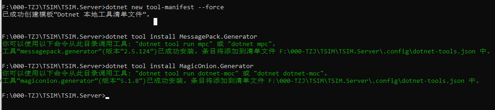
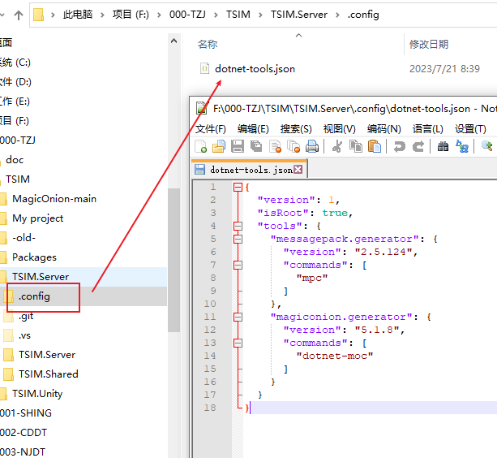
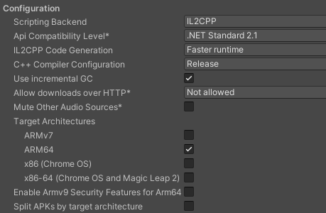
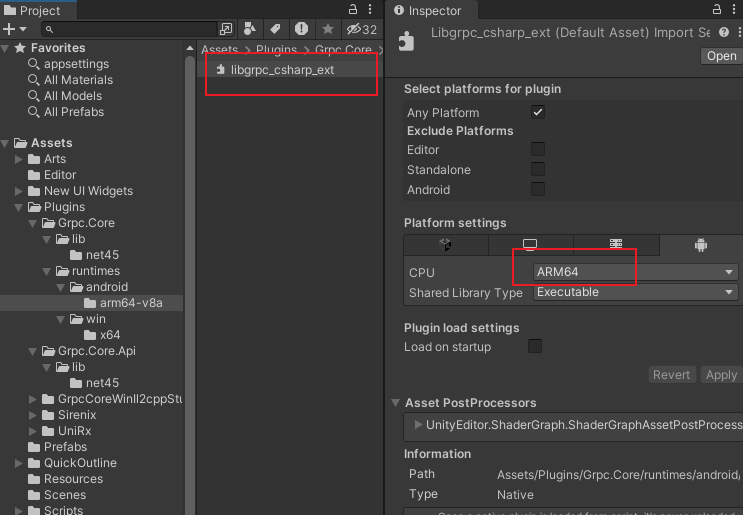

学习任何一个插件，最好的方式就是去仔细阅读它的官方文档，先原文（英语）阅读一遍，然后再阅读译文，一遍不够，再来一遍！！！
MagicOnion
知识无国界，作者是一个日本大佬，非常崇拜，Unitask,MemoryPack 等都是它写的
官网：https://github.com/Cysharp/MagicOnion, 原为阅读和翻译阅读
我认为最合适的轻便服务器，提供RPC,实时通信，用在WPF unity上都不错，WPF或者.net的桌面端开发看官网文档就行了，下面主要记录Unity方面的开发
Unity开发过程
项目说明
使用此框架实现一个 CS 架构的系统
- 工程目录结构设计,项目文件夹结构如下，便于后期的插件注册
- TSIM.Server //服务器解决方案
TSIM.Server //服务器项目
TSIM.Shared //共享接口库
+ TSIM.Unity //Unity项目
Server项目
-
创建 AspNetCore.APP空项目(net7.0)
-
在Nuget下载包：
-
MagicOnion.Server
-
Grpc.AspNetCore
- 版本管理：gitee,国内最大的开源版本库（适合非游戏类型的工程管理）
Shared项目
-
创建 库项目 (netstandard2.0)，2.1 grpc没有支持
-
在Nuget下载包：
-
MagicOnion.Abstractions
-
MagicOnion.Shared
-
MessagePack.UnityShims：这个是对Unity的支持，提供了Unity里面的结构类型
Unity项目
-
Unity 版本： Unity2022
-
版本管理：svn,(群晖上自建的SVN服务器)
项目搭建过程
MagicOnion UnityPackge 包使用
该包在发布版本下载UnityPackge ，导入到Unity项目中
https://github.com/cysharp/MagicOnion/releases
Grpc library for Unity client
Grpc 在 netstandard2.0 时候，提供了对Unity的支持，但是当出现跨平台的 .net 之后，就移除对Unity的支持了，MagicOnion的作者正在实现这部分的支持。
目前的处理方式，通过MagicOnion 案例中的 Unity项目，复制拷贝过来
问题
-
开发环境：Mac M1，在Window上正常，mac上不正常
-
Unity版本：2023.1.4f1c1 silicon
-
错误信息
DllNotFoundException: grpc_csharp_ext assembly:<unknown assembly> type:<unknown type> member:(null)
解决过程
- 相关问题的连接
https://github.com/grpc/grpc/issues/30068
https://github.com/grpc/grpc/issues/25223
-
简要说明：就是grpc 不支持 unity 了，他们觉得维护成本很高，不再支持， unity intel 版本不存在问题，但是 silicon 版本可能缺少本机库的支持
-
nugetforunity 不是官方出品，即使使用这个插件将nuget里面的包倒入unity ，可能存在问题。
-
最好的状态：就是magiconion作者大佬，实现支持，期待中
MessagePack
下载地址
https://github.com/neuecc/MessagePack-CSharp#unity
MagicOnion code generator (for IL2CPP)
MagicOnion 默认仅支持UnityEditor 或者 非 IL2CPP，也就是不能发布：windows-il2cpp、 安卓、苹果这些版本，显然是不行的。如果要支持还需要做其他的工作，将我们的Shared项目生产客户端并且注册到Unity项目，生成客户端们这里分别对 MessagePack 和 MagicOnion 都要操作
准备工作
-
安装 dotnetcore3 runtime,这里下载3.1就可以了
-
使用vs 非预览版，在使用vs2022 preview版本时，出现错误，换成非预览版正常
操作过程
- 安装 MessagePack.Generator
安装分全局安装和本地安装。
- 全局安装
dotnet tool install --global MessagePack.Generator
- 本地安装，在服务器解决方案的根目录，打开cmd

- 执行下面的命令
dotnet new tool-manifest
dotnet tool install MessagePack.Generator
dotnet tool install MagicOnion.Generator
- 若提示如下错误
C:\Users\ABYTE\AppData\Local\Temp\8e12065c-69cb-4bf3-92cf-7fbfc1dd389c\restore.csproj : error NU1301: 无法加载源 https://dot
net.myget.org/F/roslyn/api/v3/index.json 的服务索引。
无法还原工具包。
工具“messagepack.generator”安装失败。此故障可能由以下原因导致:
* 你尝试安装预览版，但未使用 --version 选项来指定该版本。
* 已找到具有此名称的包，但是它不是 .NET 工具。
* 无法访问所需的 NuGet 源，这可能是由于 Internet 连接问题导致。
* 工具名称输入错误。
有关更多原因(包括强制包命名)，请访问 https://aka.ms/failure-installing-tool
- 提示我们需要指定一个版本，通过
dotnet tool search 包名来搜索包
F:\000-TZJ\TSIM\MagicOnion-main\samples\ChatApp>dotnet tool search messagepack.generator
包 ID 最新版本 作者 下载 已验证
---------------------------------------------------------------------------
messagepack.generator 2.5.124 neuecc,aarnott 100885
tapper.generator 1.8.3 nenoNaninu 6792
- 安装指定版本的包
dotnet tool install messagepack.generator --version 2.5.124
- 查看命令信息
dotnet mpc
- 安装
mpc和moc的截图信息

- json文件

- 根据命令提示，配置Shared项目
<Project Sdk="Microsoft.NET.Sdk">
<PropertyGroup>
<TargetFramework>netstandard2.0</TargetFramework>
</PropertyGroup>
<ItemGroup>
<PackageReference Include="MagicOnion.Abstractions" Version="5.1.8" />
<PackageReference Include="MagicOnion.Shared" Version="5.1.8" />
<PackageReference Include="MessagePack.UnityShims" Version="2.5.124" />
</ItemGroup>
<Target Name="RestoreLocalTools" BeforeTargets="GenerateMessagePack;GenerateMagicOnion">
<Exec Command="dotnet tool restore" />
</Target>
<Target Name="GenerateMessagePack" AfterTargets="Build">
<PropertyGroup>
<_MessagePackGeneratorArguments>-i ./TSIM.Shared.csproj -o ../../TSIM.Unity/Assets/Scripts/Generated/MessagePack.Generated.cs</_MessagePackGeneratorArguments>
</PropertyGroup>
<Exec Command="dotnet tool run mpc $(_MessagePackGeneratorArguments)" />
</Target>
<Target Name="GenerateMagicOnion" AfterTargets="Build">
<PropertyGroup>
<_MagicOnionGeneratorArguments>-i ./TSIM.Shared.csproj -o ../../TSIM.Unity/Assets/Scripts/Generated/MagicOnion.Generated.cs</_MagicOnionGeneratorArguments>
</PropertyGroup>
<Exec Command="dotnet tool run dotnet-moc $(_MagicOnionGeneratorArguments)" />
</Target>
</Project>
注意：TSIM.Unity/Assets/Scripts/Generated/MagicOnion.Generated.cs 此路径要对应Unity项目和Shared项目的相对路径，应该也可以写绝对路径，目的就是将 Shared项目 生成到 Unity项目中
- 上面将 Shared项目生成客户端，下面将注册到Unity中
在unity项目中新建脚本InitialSettings，下面的脚本包含了注册，以及Grpc的通道设置（且是必须的）
using System.IO;
using Grpc.Core;
#if USE_GRPC_NET_CLIENT
using Grpc.Net.Client;
#endif
using MagicOnion.Unity;
using MessagePack;
using MessagePack.Resolvers;
using UnityEngine;
namespace Assets.Scripts
{
class InitialSettings
{
[RuntimeInitializeOnLoadMethod(RuntimeInitializeLoadType.BeforeSceneLoad)]
static void RegisterResolvers()
{
// NOTE: Currently, CompositeResolver doesn't work on Unity IL2CPP build. Use StaticCompositeResolver instead of it.
StaticCompositeResolver.Instance.Register(
MagicOnion.Resolvers.MagicOnionResolver.Instance,
MessagePack.Resolvers.GeneratedResolver.Instance,
BuiltinResolver.Instance,
PrimitiveObjectResolver.Instance
);
MessagePackSerializer.DefaultOptions = MessagePackSerializer.DefaultOptions
.WithResolver(StaticCompositeResolver.Instance);
}
[RuntimeInitializeOnLoadMethod(RuntimeInitializeLoadType.BeforeSceneLoad)]
public static void OnRuntimeInitialize()
{
// Initialize gRPC channel provider when the application is loaded.
GrpcChannelProviderHost.Initialize(new DefaultGrpcChannelProvider(new GrpcCCoreChannelOptions(new[]
{
// send keepalive ping every 5 second, default is 2 hours
new ChannelOption("grpc.keepalive_time_ms", 5000),
// keepalive ping time out after 5 seconds, default is 20 seconds
new ChannelOption("grpc.keepalive_timeout_ms", 5 * 1000),
})));
// NOTE: If you want to use self-signed certificate for SSL/TLS connection
//var cred = new SslCredentials(File.ReadAllText(Path.Combine(Application.streamingAssetsPath, "server.crt")));
//GrpcChannelProviderHost.Initialize(new DefaultGrpcChannelProvider(new GrpcCCoreChannelOptions(channelCredentials: cred)));
// Use Grpc.Net.Client instead of C-core gRPC library.
//GrpcChannelProviderHost.Initialize(new GrpcNetClientGrpcChannelProvider(new GrpcChannelOptions() { HttpHandler = ... }));
}
}
}
Unity端使用共享库
服务端可以通过项目引用直接使用共享库，但是Unity端因为依赖不同不能直接使用共享库dll,需要直接使用共享库的源代码，官方的解决方案是，通过 源码链接来实现，没搞懂，直接将代码考本到Unity，作为一个本地包来导入
- 在 Unity项目的 Pacakges 文件夹下，创建 TSIM.Shared 文件夹（TSIM 是我的项目名称），创建 package.json 和 程序定义文件 TSIM.Shared.Unity.asmdef
package.json
{
"name": "com.abyte.tsim.shared.unity",
"version": "1.0.0",
"displayName": "TSIM.Shared.Unity",
"description": "服务端-客户端共享源文件，由于MessagePack所依赖的库不同，不能使用dll，处理方式在服务端写完后，拷贝到Unity",
"unity": "2020.3"
}
问题和处理
其他电脑连接服务器失败
确保服务器的配置为 0.0.0.0，表示监听所有IP的连接
{
"Kestrel": {
"Endpoints": {
"Grpc": {
"Url": "http://0.0.0.0:7000",
"Protocols": "Http2"
},
"Https": {
"Url": "https://0.0.0.0:7001",
"Protocols": "Http1AndHttp2"
},
"Http": {
"Url": "http://0.0.0.0:7002",
"Protocols": "Http1"
}
}
},
"Logging": {
"LogLevel": {
"Default": "Information",
"Microsoft.AspNetCore": "Warning"
}
},
"AllowedHosts": "*"
}
安卓端打包错误 找不到grpc_csharp_ext.dll
-
Unity版本：Unity2022 / Unity2023
-
设置：IL2CPP ARM64

原因：
DLL文件设置需要根据项目设置同步调整
